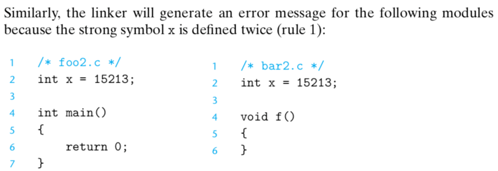
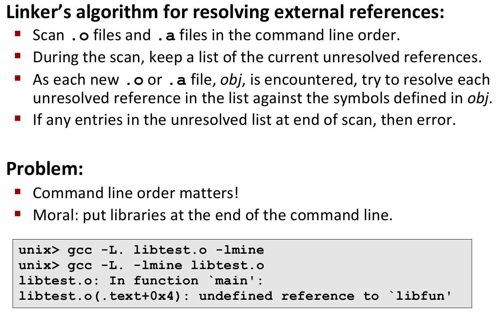

System Programming week 11
Example C Program

Static Linking
object file은 machine level까지 complie되었지만, 아직 executable file은 아닌 상황
Why Linkers?
What do Linkers do?
각종 symbol들의 위치를 결정하는 과정을 symbol resolution이라고 함
linker가 symbol resolution을 할 때, 각 symbol은 딱 하나만 있어야 함 -> 여러개가 있는 경우 error
executable file을 만들 때, 각 symbol의 위치는 virtual address
code는 code끼리, data는 data끼리 모아서 merge
Three kinds of object files (modules)
machine language로 바뀌면 일단 전부 object file
Shared object file - dynamic하게 linking되고, 실행될 때 memory로 load됨
Executable and linkable format (ELF)
하나의 format을 가지고 여러개의 object file을 모두 지원해야 함
ELF object file format
Linker symbols
local symbol로 사용하고자 한다면 이름이 겹치는 symbol 앞에 static이라고 붙이면 된다. 그러면 exclusive하게 해당 module 내에서만 사용된다. 외부에서 사용이 불가능.
local linker symbol은 local program variable과는 다름
Symbol resolution
Local symbol
How linker resolves duplicate symbol definitions
Linker’s symbol rules
Linker puzzles
Example

Global varaibles
Relocation
Relocation entries
Relocated .text section
Loading Executable object files
Packaging commonly used functions
Old-fashioned solution: static libraries
Creating static libraries

Commonly used libraries
Linking with static libraries
Using static libraries

Dynamic linking at load-time
Dynamic linking at run-time
Linking summary
Control flow
Altering the control flow